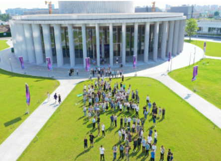

Latest contribution from Prof. Mohamad Sawan's research group: a cSP-based multi-virus biosensor for monkeypox virus
2024-11-14
Global responses to pandemics emphasize the critical need for biosensors to monitor outbreaks during major public health events. The Monkeypox Virus (MPXV) pandemic is spreading, MPXV infections emphasize the need for rapid and sensitive pathogen diagnostics. This action is crucial for guiding timely and effective clinical treatments and vaccination strategies. However, current detection technologies, including real-time polymerase chain reaction tests (real-time PCR) and isothermal amplification-related methods, are flawed because they require rigidly structured environments and well-trained personnel to perform the precise steps. Therefore, an easy, rapid, and automated biosensing method to efficiently detect MPXV in clinical samples is required.
Global responses to pandemics emphasize the critical need for biosensors to monitor outbreaks during major public health events. The Monkeypox Virus (MPXV) pandemic is spreading, MPXV infections emphasize the need for rapid and sensitive pathogen diagnostics. This action is crucial for guiding timely and effective clinical treatments and vaccination strategies. However, current detection technologies, including real-time polymerase chain reaction tests (real-time PCR) and isothermal amplification-related methods, are flawed because they require rigidly structured environments and well-trained personnel to perform the precise steps. Therefore, an easy, rapid, and automated biosensing method to efficiently detect MPXV in clinical samples is required.
Global responses to pandemics emphasize the critical need for biosensors to monitor outbreaks during major public health events. The Monkeypox Virus (MPXV) pandemic is spreading, MPXV infections emphasize the need for rapid and sensitive pathogen diagnostics. This action is crucial for guiding timely and effective.